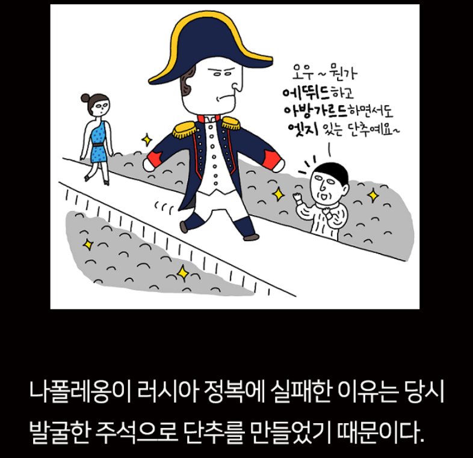
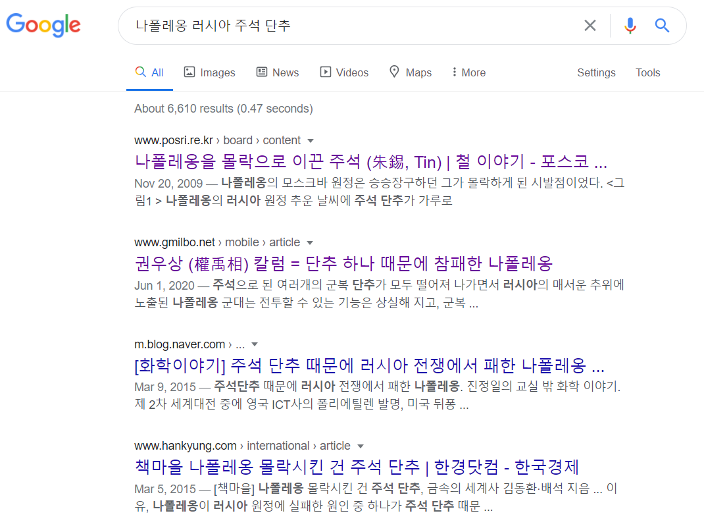
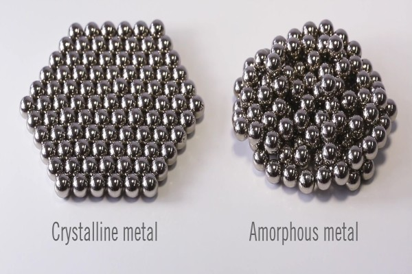
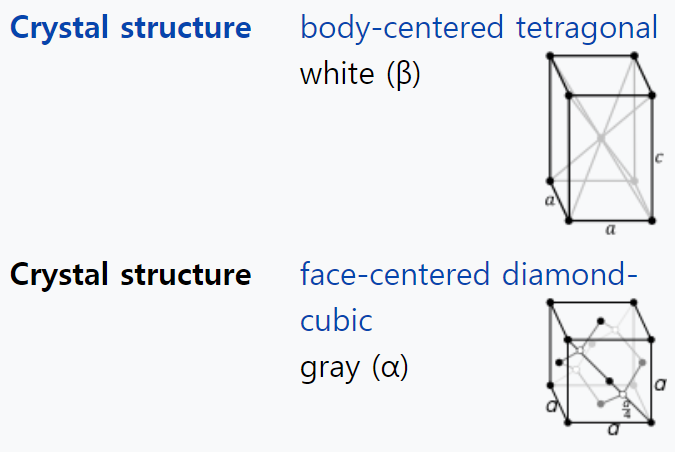
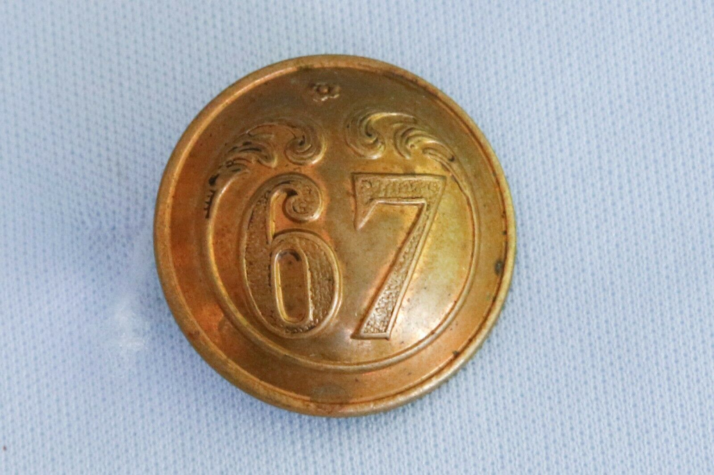
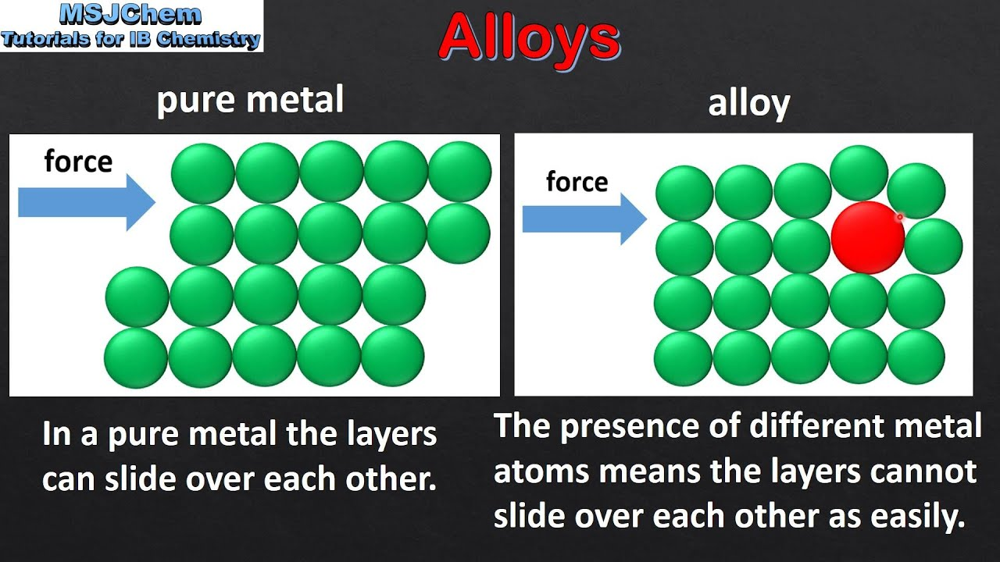
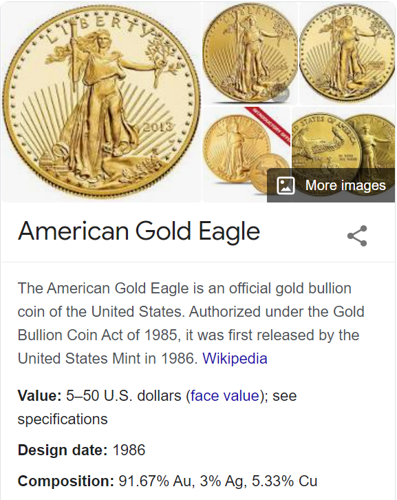
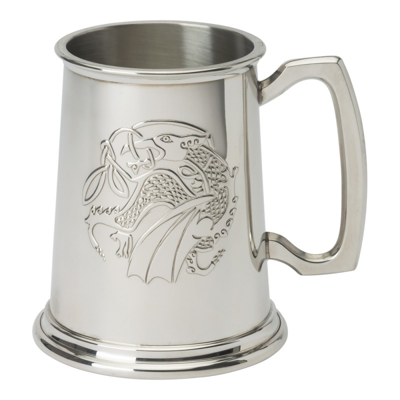
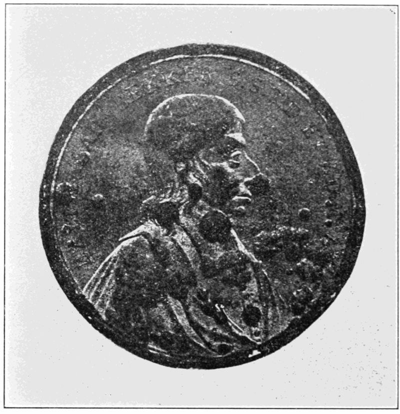

나폴레옹과 주석 단추 - 도시 전설은 어떻게 만들어지나
게시: 2021-01-18T06:30:42+09:00
최근에 어떤 책 광고에서 재미있는 삽화를 본 김에 이번 주는 잠시 쉬어가는 잡담 코너로 꾸밉니다. 그 삽화는 아래와 같은 것입니다.

요약하면 이렇습니다. 프랑스군 병사들의 외투 단추는 주석으로 되어 있었는데, 주석은 극심한 추위 속에서는 화학적 성격이 변하여 가루로 부서지기 때문에, 1812년 러시아의 추위 속에서 군복 단추가 다 떨어져 나간 병사들이 옷을 여미지 못해 얼어죽었다는 것입니다. 나폴레옹의 1812년 러시아 원정이 망한 이유가 주석 단추 때문이었다는 이야기는 꽤 오래 전에 나온 것입니다. 지금도 한글 검색만 해봐도 그런 이야기를 다룬 포스팅이 많습니다.

실제로 주석에는 특이한 성질이 있습니다. 금속이 결정체라고 하면 이상하게 생각하실 분들도 많겠습니다만, 철이건 구리건 금속은 상온에서 각각 특수한 결정 구조를 가지고 있습니다. (물론 산업용으로 사용하기 위해 일부러 유리와 같은 비결정질 금속(amorphous metal)을 만들기도 합니다.) 그 중에서도 주석은 일상에서 접할 수 있는 온도에 따라 2가지 다른 특성의 결정 구조를 갖습니다. 흔히 백색 주석이라고 하는 β-tin이라는 결정 구조가 우리가 아는 주석으로서 13.2 °C 이상에서는 이 상태가 안정적인 구조입니다. 그러나 그 이하로 온도가 떨어지면, α-tin이라는 결정 구조가 더 안정성을 가집니다. 이건 흔히 회색 주석이라고 부르는데, 금속이 아니라 마치 유리나 흑연처럼 깨지기 쉽고 딱딱한 성질을 가집니다. 그래서 단단하던 주석이 결국은 회색 가루로 부서지게 됩니다. 이런 현상을 tin pest, 즉 주석 흑사병이라고 부릅니다.

(보통의 금속은 결정질입니다. 그러나 급냉 등의 특수 처리를 통해 동일한 금속을 비정질로 만들 수도 있습니다. 비정질 금속은 기계적 특성 뿐만 아니라 자기적 특성도 달라지기 때문에 초전도체를 만들 때 저런 비정질 처리를 하기도 합니다.)

(주석의 2가지 결정 형태) 그러니 1812년 러시아에서 후퇴하던 프랑스 병사들은 군복의 주석 단추가 마치 분필처럼 차츰 푸석푸석한 가루로 부서져 나가는 것을 보고 깜짝 놀랐을...까요? 물론 위의 이야기는 그럴싸하지만 전혀 사실이 아닙니다. 러시아 원정에 참여했다가 살아돌아온 사람들은 나폴레옹 본인부터 일개 사병까지 많은 사람들이 회고록을 남겼는데, 그 중 주석 단추에 대한 쓰라린 기억을 기록한 사람은 아무도 없었습니다. 왜 그랬을까요? 이유는 간단합니다. 병사들의 단추는 주석이 아니었습니다. 지금도 그렇지만 그때도 주석은 꽤 비싼 금속이었습니다. 당시 일반 사병들의 군복 단추는 대개 동물의 뼈로 만들었고, 금속으로 된 단추는 오직 장교복에나 달 수 있었습니다. 그리고 장교복의 단추도 주석이 아니라 대부분 놋쇠, 즉 구리와 아연의 합금으로 만들었습니다.

(나폴레옹 시대 당시의 프랑스군 군복 단추입니다. 보통 연대 번호가 그 단추에 새겨져 있었습니다. 이런 정교한 금속 세공품을 졸병들이 가슴에 주렁주렁 달고 다닌다? 당시 공업력으로는 매우 힘든 일이었습니다.)
일부 부대에서는 장교든 병사든 주석으로 만든 단추도 사용했을 것입니다만, 그런 부대에서도 주석 흑사병에 의해 단추가 부슬부슬 부서지는 일은 없었습니다. 이유는 그 단추도 보통 그냥 주석 단추(tin button)라고 불렀지만 실은 주석 합금 단추였기 때문입니다. 우리가 흔히 일상에서 접하는 금속은 순금 장신구를 제외하고는 대부분 순수한 금속이 아닙니다. 강철이든 무쇠든 일단 탄소가 잔뜩 섞인 철이고, 흔히 순수 구리라고 알고 있는 구리 전선도 보통 약간의 마그네슘이 섞인 합금입니다. 심지어 맥주캔 만드는 알루미늄도 망간이나 아연 등이 약간 섞인 합금입니다. 왜 순수 금속을 쓰지 않고 합금을 쓸까요 ? 이유는 2가지인데, 하나는 금속을 순수한 상태로 정련하는 것이 어렵기 때문이고, 다른 하나는 금속이든 탄소든 다른 원소가 약간이라도 섞인 것이 더 우수한 강도의 금속재료가 되기 때문입니다.

(순수 금속 결정과 이물질이 섞인 합금 결정이 응력을 받았을 때의 차이입니다.) 위에서도 언급했듯이, 금속은 상온에서 대개 일정한 결정질 형태로 존재합니다. 순수 금속의 결정질은 외부에서 응력이 가해지면 전자들로 묶인 원자들의 단층판이 미끄러지듯 흘러 쉽게 변형되지만, 탄소나 망간, 구리 같은 소량의 다른 원소가 잘 뒤섞이면 그런 결정 구조 속에 쐐기 역할을 하기 때문에 외부에서 응력이 가해져도 쉽게 미끄러지지 않습니다. 그래서 보통 금반지도 24K 순금으로 만든 것은 쉽게 일그러지지만 은을 약간 섞은 14K나 18K 금반지는 꽤 튼튼한 것입니다. 실제로 미국의 아메리칸 이글이나 남아공의 크루거 금화도 24K 순금으로 만든 것은 아니고 약 90%의 금에 은과 구리 등을 합금한 것입니다. 순금으로 금화를 만들면 금화가 너무 물러서 일그러지거든요. 대신 1온스짜리 금화라고 하면 실제로 1온스의 금이 들어간 것은 사사실이고 거기에 은과 구리를 추가로 넣은 것이기 때문에, 무게가 1온스보다 더 무거운 1.1온스 정도 된다고 합니다.

(제가 좋아하는 아메리칸 이글 금화입니다. 예, 저는 배금주의자입니다.) 그래서 주석도 일상에서 실제 100% 순수 주석이 쓰이는 일은 없습니다. 레미제라블에서 장발장이 촛대와 은식기를 훔치는 바람에 미리엘 주교는 그 다음날 식사를 주석 식기 또는 나무 식기로 해야 할 형편이었는데, 그 주석 식기도 정확하게는 couverts d'étain (tin cutlery)가 아니라 pewter cutlery, 즉 백랍 식기입니다. Pewter는 우리 말로 백랍이라고 하지만 우리 귀에도 백랍이라는 말은 굉장히 낯설지요. 그래서 보통은 그냥 주석 식기라고 부르는 것입니다. Pewter는 주석 85–99%에 안티몬과 구리를 약간 섞은 합금입니다. 따라서 프랑스군의 군복 단추 중에 주석제가 있었다고 해도 그건 순수 주석이 아니라 pewter, 즉 주석 합금이었을 것이고, 주석 흑사병은 순수 주석에서만 일어나는 것이라서 러시아의 강추위 속에서도 단추가 부슬부슬 부서지는 일은 없었을 것입니다. 실제로 멋 때문에 맥주를 주석잔으로 마시는 분들이 요즘도 있는데, 한겨울이라고 그 주석잔이 부슬부슬 부서지는 것을 보신 분은 전혀 없을 것입니다. 그 주석잔도 정확하게는 tin tankard가 아니라 pewter tankard이거든요.

(보통 주석잔이라고 번역하는 pewter tankard입니다. 저렇게 생긴 건 아니지만 저희 집에도 어디서 기념품으로 받은 주석잔이 있긴 한데... 사실 거의 안씁니다.)
뿐만 아니라 순수 주석 단추라고 해도, 영하의 온도에서 단추가 회색 가루로 부서져나가는 일은 쉽게 일어나지 않습니다. 100% 순수한 금속은 이론적으로 지구상에 존재하지 않거든요. 구리든 납이든 아연이든 약간의 이물질이 섞일 수 밖에 없고, 그래서 정말 오랫동안 영하 10도의 온도에 두어도 순수 주석 덩어리가 회색 가루 더미로 변하는데는 엄청나게 긴 세월이 필요합니다. 실험에 따르면 그런 영하의 온도에서 18개월 정도 지나야 어느 정도 꽤 심각한 수준의 주석 흑사병이 진행된다고 하네요.

(주석 흑사병이 표면에 약간 발생한 주석 동전입니다.) 그런데 왜 이런 도시 전설이 생겨난 것일까요? 과학적 상식을 그냥 말해주면 대부분 '궁금하지도 않고 묻지도 않았다'라는 핀잔을 듣기 일쑤였던 공대생들이 어떻게든 재미있는 이야기거리로 만들어낸 것일 수 있습니다. (성차별적인 이야기가 되겠습니다만, 아마 여성분들은 과학 + 군대 이야기라서 더 질색했을 것 같습니다.) 더 그럴싸한 설명도 있습니다. 러시아에서 제조된 주석 제품에 진짜 주석 흑사병에 의한 표면 부식이 대량 발생한 사건이 1860년대에 있었다고 합니다. 이 이야기가 '러시아'라는 단어와 '추위'라는 단어가 합해져서 나폴레옹 병사들의 주석 단추 이야기로 합성되었다는 설도 있습니다. 뭐 진실이야 어쨌든 이러면서 과학 상식 하나씩 더 배우는 거지요 뭐. Source : en.wikipedia.org/wiki/Tin_pest
metallurgyfordummies.com/amorphous-metal.html